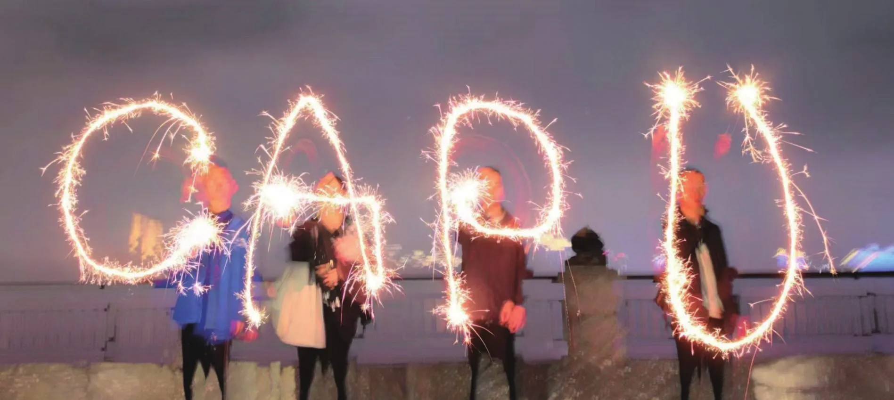
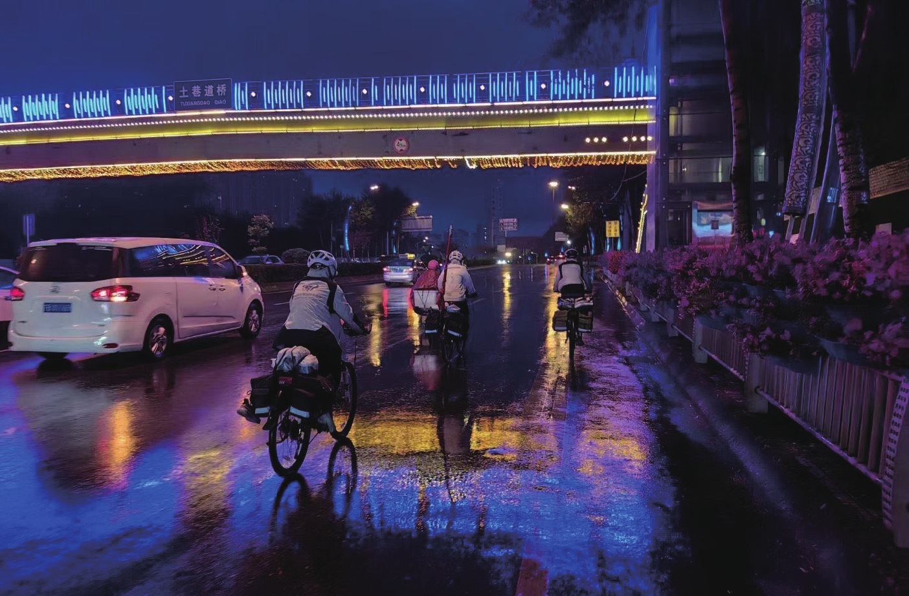
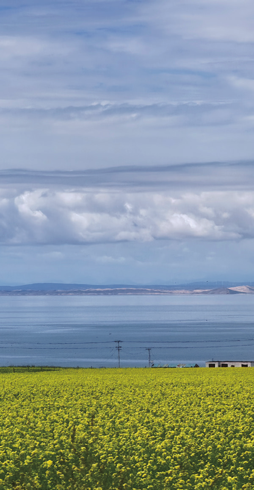

Everglow
原刊106






距离下飞机回到家已经过去了整整二十四个小时。这二十四个小时中我感觉自己的灵魂患了一场病。其实在冬游的第一天里，看着太阳在太湖的左侧徐徐落下，晕染着天空和湖面的时候，我就预感到了我从冬游回来后的日子应该会不太好过。
从每天置身于蓝天大地间，穿梭在森林江河中，沐浴在谈笑欢声里的日子变为身处于十几平米小屋子中面对着或屏幕或书本的生活，是一种囚禁。可没有想到过会如此的难过。今早一觉醒来已是十点半，回完微信以后便开始刷起了b站，打算一直等到午饭再起床。
就这么躺着，看着手机，却时常神游到那些在南方的早晨。虽说每天都只有六个小时的睡眠，虽说起床关掉闹钟的那一刻想要杀了这么晚睡的自己和要我这么早起的组长，但一天新的行程和令人期待的早餐总会带给我十足的活力与希望，供养着我的心跳与灵魂。我想起了那个冷得让我瑟瑟发抖的黎明，那个因落枕疼了我一上午的脖子和两个为打早饭前站而吹拂的晨风。
那是活着的感觉，而躺在床上的我像一具死尸。我拉开了窗帘，近正午浓烈的阳光涌入了整间屋子，比南方穿透薄雾洒在我身上的日光要热烈，要纯粹。我想起了那个骑着骑着热到我只穿短袖的正午，手中轻捧着的古茗。
要是今天我可以出去骑车该多好，我好想念那辆在火车上向我赶来的车车，也好想念在北京喝不到的奶茶里的花生。中午一边吃着炸酱面，一边和爸妈有一搭没一搭地闲聊着，大多都是和冬游相关的。“你们在杭州的时候去西湖了吗？”
“去了，但我感觉西湖也就那样，不如太湖。”“……”“这是你第三次去西湖，还记得吗？”我真的不记得了，我好想不谈论西湖，去和他们讲我第一天在太湖看到的群鸟，落日和明月，去讲从湖面吹来的不如海风般咸腥却又潮湿温暖的空气。
这些很美，却又不是我心中的太湖。我想起的，更多的是大家沿着环湖大道骑成的一条长龙，彼此感叹着风光的美好；我想起的，更多的是因想停下来拍照而被沐阳以为是扎胎的误会和拍下一株让我想起华年头像的树的惊喜；我想起的，是那种全然置身于天地间的辽阔和肆意骑行任风吹打的自由。
也许以后我会带着父母来到太湖边上，像我们沿途看到的人们一样，在草坪上摆一桌烧烤，沐浴在湖风和月光之下，可我又该怎么和他们解释，我的太湖，我说出那句话时我心中的太湖。遂又想起在台州第一次骑电动车的惊心动魄。一转旋钮就开始向前飞奔的感觉好不真实，这并非来源于我双腿的动力使我恐惧，于是在下一个路口便哭着喊着要和成绩把车换回来。
再蹬上自己车车的安心感就如同睡回了自己的枕头和床。我不想去和人解释骑电动车，摩托车旅行和骑自行车有什么区别，同样的我也不想去和人解释我为什么选择抽出寒假的这十天用来每天疯狂的骑车把自己折磨的半死，同样的这24小时里我心底无尽的失落感我也从未和车协外的人提起。
他们听不懂，我也讲不明白。我在冬游A组群里描述了我当天无所事事的消极的状态后，猴猴说到她什么都干不进去，遂摆烂。她说这叫骑车综合症，愿意把她的公路车借给我骑。
我说不必。我知道，这种病一个人骑车是治不好的。在来冬游以前，从拉练和晚训的种种要求里我就能感受到，车协是一个无比重视集体的地方，可原本独来独往，有着强烈个人主义色彩的我在冬游才第一次真的爱上了一群人。
是因为爱上了这一群人而爱着其中的每一个人，少了谁，这份爱都会不完美。我的下午就在不停刷新着车协论坛等待网页恢复正常和一个午觉中过去了。直到吃晚饭前我都还没有想好朋友圈的文案，也没有等来恢复正常的论坛。
我想，如果我如果有要写但没写完的队记，或是要剪辑还没剪的冬游视频我也或许不会这么的无聊。我对车协和骑车以外的一切事情都没有兴趣，期待着晚饭的时候嘴里满是江西小炒中回锅肉的香气。现在想来这一切都很像是一种失恋的感觉，我从那如梦般美好的日子中被强行拽了回来，和大家，和我的车，和风和树和湖和海和桥和坡和扎的胎和蹭的碟和一声声后旗在吗道别。
我不愿离开你们，我不愿离开这一切。晚上的时候一个高中同学的群里有人来约饭，我答应了。答应的时候心里蛮复杂的，颇有一种出轨的感觉。
我心里想着的是冬游，是车协，让我失魂落魄的是骑车，是你们，可我偏偏要在明天去和他们吃饭，打牌。我知道明天会是快乐的，但也一定无法缓解我心底的，因你们而失恋的悲伤。东日说她有一个ddl要赶，但效率好低，我想，不如开个腾讯会议一起云自习。
你赶你的ddl，我学我的高数B。毕竟生活总是要向前，但后来发现绝对不在今天。看着重积分那一堆又一堆的数字符合，以前学数学的那种兴奋感荡然无存。
在强迫着自己看了几页书后选择了放弃，也逐渐想好了究竟要写些什么。这份失恋应当被记录，我也想将她讲给你们听。我不知道我该怎么面对后面的生活，一个月后我能不能坐在教室里如往日一般投入的听课，但我知道的是这次冬游以后我灵魂的一部分已经被重塑，我所追求所向往的事情也在改变。
突然想起了回北京的晚上和东日随口讲起的话：也许我就不再会上学了，谁知道呢。谁知道呢。我找到了我心之所向的事情，并愿意为他献出我的生活。
至少，于今晚，此时此刻，我愿意。2023.1.16